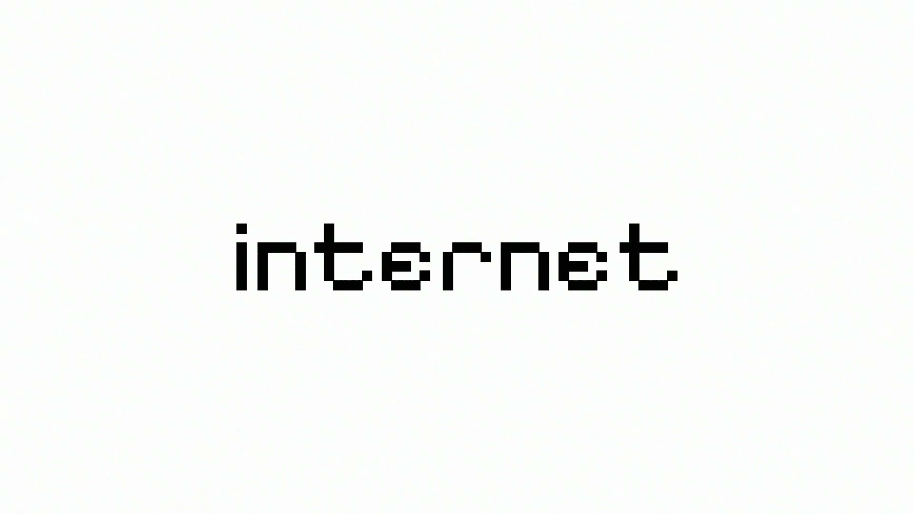

21 things we like.pdf
21 things we like.pdf© 2026 Internet Labs
Internet is a company that builds viral, beautiful consumer products and software.
We're a small team in New York, building a handful of products at once and shipping fast. Some take off, some don't, and we keep going either way.

Looking for NYC based product designers, iOS developers, and growth partners.
Contact:
hi@internetlabs.co
21 things we like.pdf© 2026 Internet Labs